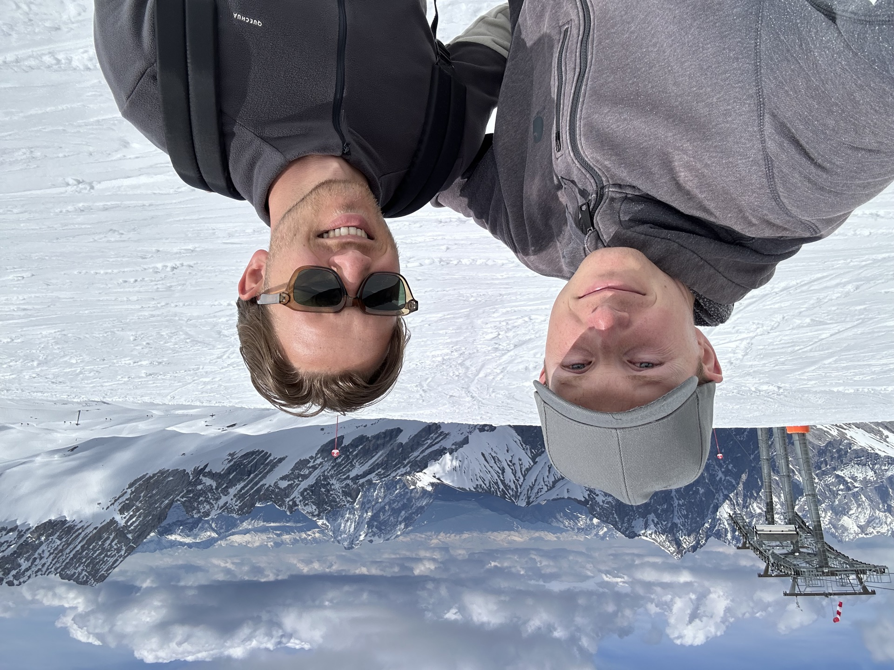
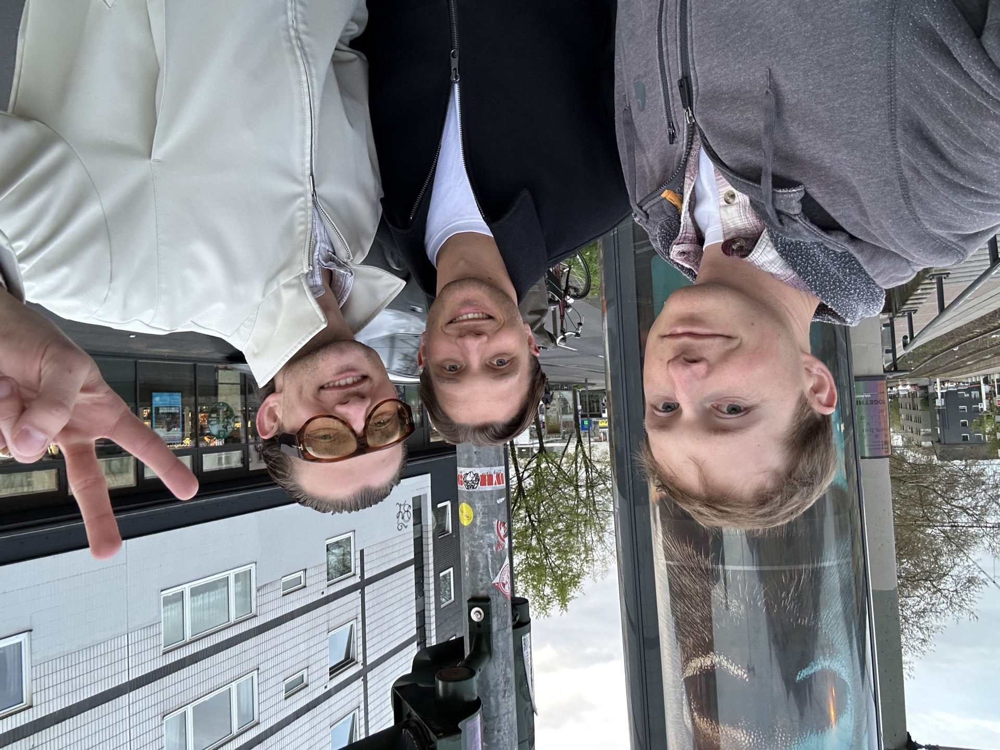
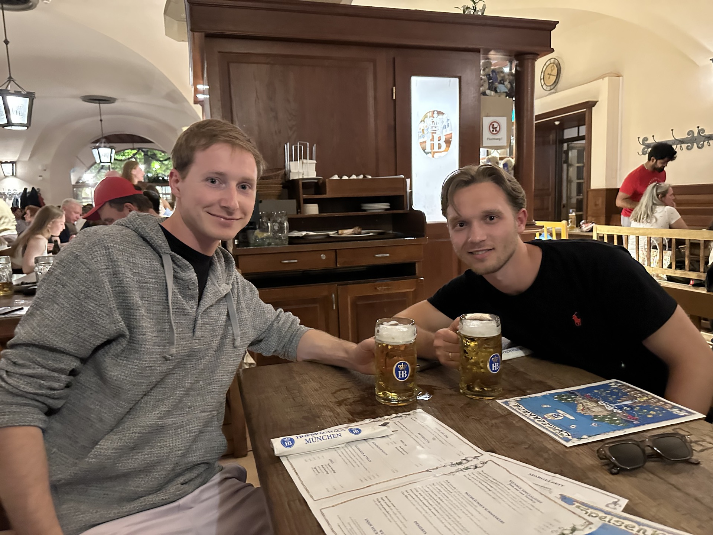
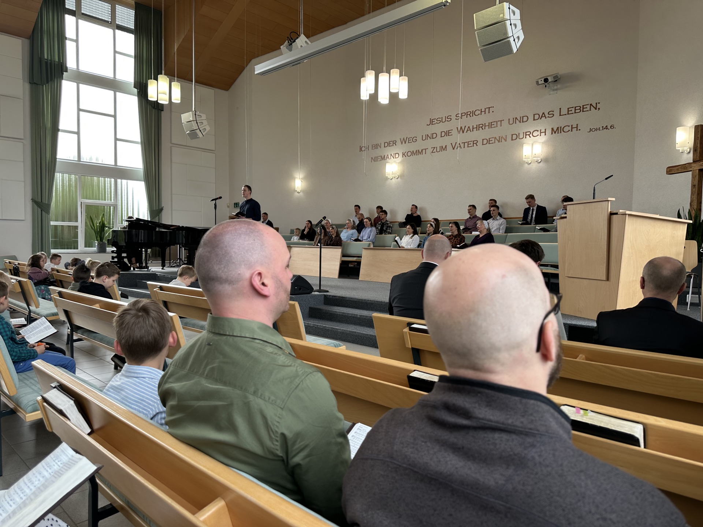
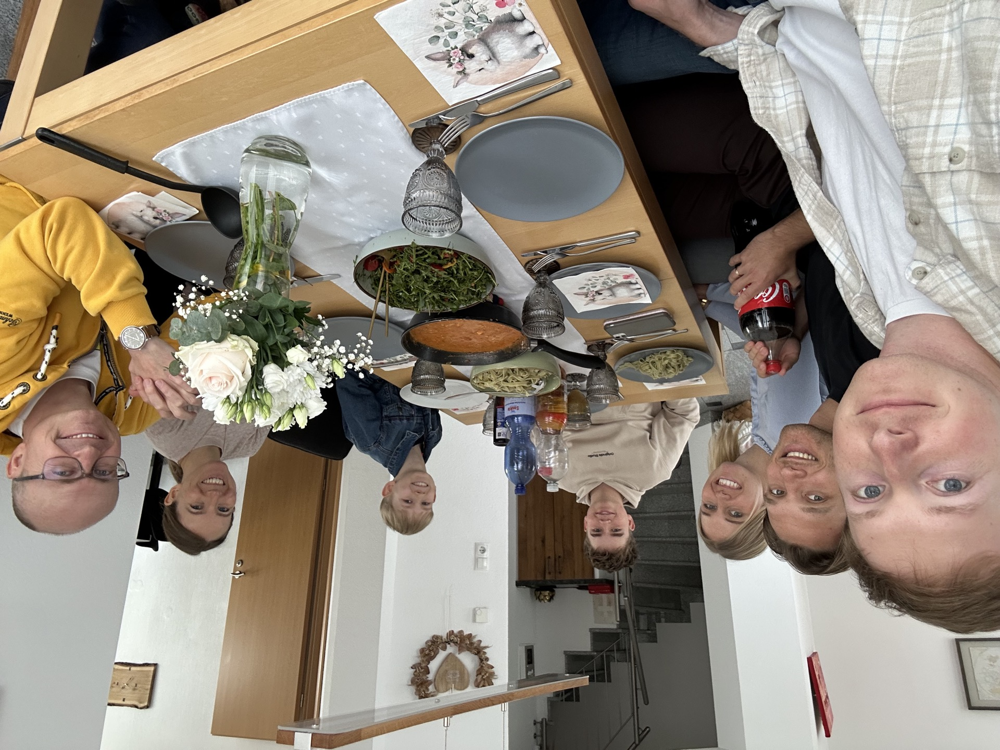
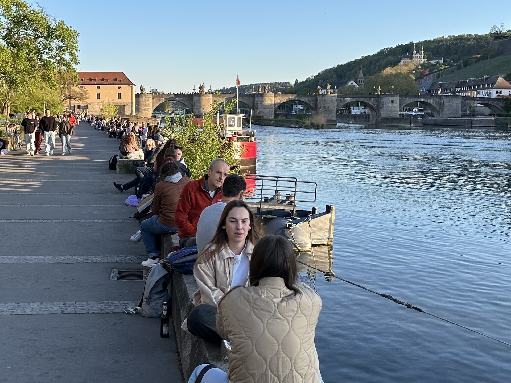
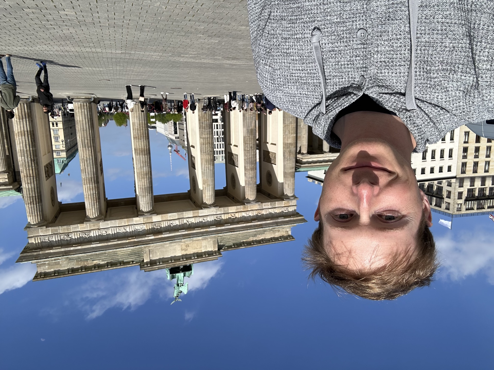
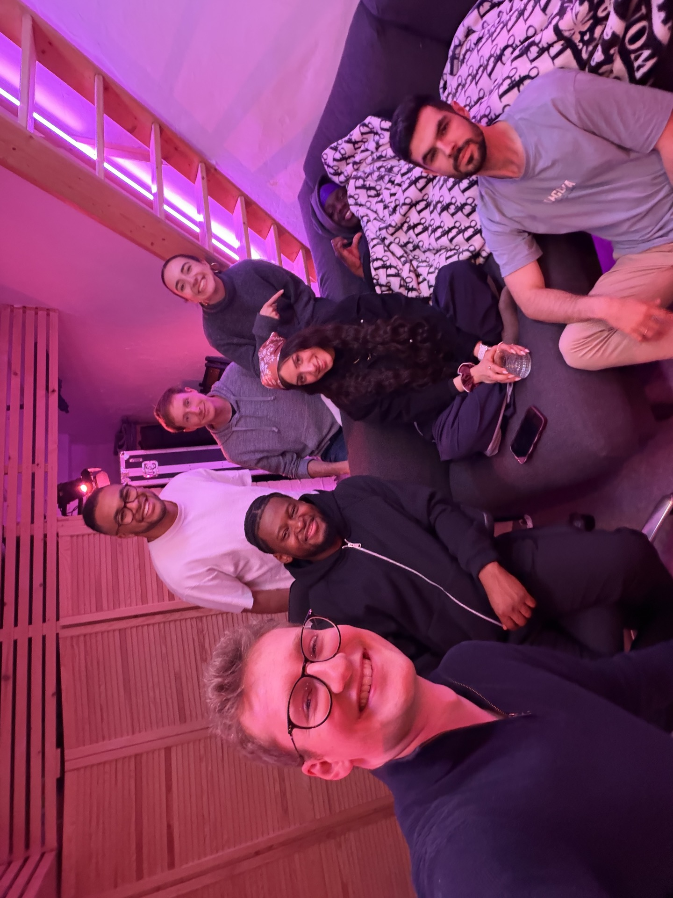

The Trip
On April 10, 2026, I landed in Frankfurt. My plan was to stay in Germany for three weeks, not to take a vacation, but to put myself in places where I could practice German. That meant going to the non-touristy parts of Germany and spending time in places like coffee shops, bakeries, and restaurants—speaking wherever I could. Jonas and his wife were kind enough to host me for a week and show me what a normal German week looks like.
My first attempt at speaking German actually came before I even landed. It was a Lufthansa flight, and the crew was German. I told one of the flight attendants I was heading to Germany to practice the language and asked if we could interact in German. They were totally receptive—spoke clearly, gave me time to respond, and over the course of the flight I picked up a few tips I'd use for the rest of the trip. The most useful: if you don't hear or understand something, just say "wie bitte." I used this phrase throughout the trip and it proved to be especially helpful.
Once in Germany, it was far more intimidating than I'd expected. Until then, all my practice had been with Jonas or Duolingo's AI—neither of which is rushed. The point of those is to practice, so if I messed up or spoke too slowly, it was fine. But in Germany, the stakes felt higher. In line at a busy restaurant, I didn't want to hold up the queue by stumbling through my order. At a checkout counter, if an employee asked me something I didn't quite catch, I felt the pressure to answer accurately—I didn't want to accidentally agree to buy anything else, for instance. I said "wie bitte" in nearly every interaction I had at least once.
What helped was context. Once an interaction started and the topic was clear, missing words became guessable. If you're buying water at a kiosk, they're almost certainly going to ask if you're paying with cash or card—so if you miss a word or two, you can fill in the gap. That made initiating an interaction the hardest part, not continuing one.
The gains in that first week were fast. Every interaction taught me something—the rhythm of small talk, the flow of ordering food. I was picking up words and sayings I'd never encountered, like "krass," and working them into my own speech.
But it wasn't just the language—I picked up a lot about the culture too. Before I left, plenty of people told me how different Germany would be. I'd be immediately recognizable as an American by my clothes. The food would be noticeably fresher and healthier. Public transportation would be so good I wouldn't need a car. Germans are reserved and don't chat with strangers the way Americans do. None of that turned out to be quite right. Germany is a lot more similar to the United States than people seem to think.
I expected lighter, fresher food across the board. What I found was mostly familiar—German grocery stores have the same processed, high-sodium options we do, and I saw more people walking around with a bottle of Coke than I typically see at home in North Carolina. The real differences were smaller. Grocery stores don't sell pre-sliced bread in bags; you pick a fresh-baked loaf and feed it through a slicing machine right there at the store—you can even set the thickness. The restaurant scene is different too: Germany doesn't really have fast casual. It's McDonald's on one end and sit-down restaurants on the other—no Chipotle, no Panera. As a result, people just eat out less often.
The public transportation really is excellent—in the cities. But Jonas and his wife live in a village near Neuwied and drive everywhere, because there's no other option. The same is true for any similarly sized town outside a major metro. The picture of Germany as a place where you don't need a car is really a picture of Berlin, Munich, or Hamburg. Anywhere else, a car is essential.
A few things surprised me. American cultural influence is more visible than I expected—I saw plenty of people in America-branded clothing, and pop culture references came up often. Germans were also far friendlier to strangers than I'd been led to believe; everyone I spoke to was as warm as anyone I'd meet at home. Coffee shops there aren't really coffee shops—they're bakeries, and nobody's lingering with a laptop for three hours.
A memorable small moment: I put my napkin in my lap at dinner, and Jonas and his wife both looked puzzled. "You don't have to put it there," they said. I looked back, just as puzzled. "That's normal in the United States." Apparently not in Germany.








Jonas showed me the Zugspitze, the highest peak in Germany.
After about 10-14 days, I started to see slower gains in my understanding and speaking ability. It was much easier to hear and understand words I already knew, but for vocabulary I didn't have beforehand, I struggled in those interactions for the entire time I was there. So midway through my time in Germany, ordering food and having simple conversations was no sweat. But more complex conversations didn't get much easier.
By the start of the third week, the focus had naturally shifted from seeking out conversations to sightseeing—touring Berlin, Hamburg, and Frankfurt. The immersion had done its job. I'd gotten what I came for, and I was ready to head home. I left with a clear sense of what came next: the way forward wasn't more time in Germany—it was more study on my own. As it turns out, a week or two of immersion is good enough in a case like this.
The way forward was not more immersion—it was more study on my own.